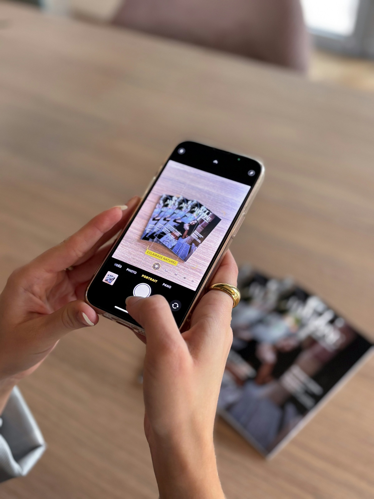

BIFROST.Landing page
Dica rápida
Seu link da bio leva para uma página só sua?
O que você faz, fotos e um botão de WhatsApp num lugar só. Quem chega pelo perfil já sabe como comprar.
Mais no perfil →

O que você faz, fotos e um botão de WhatsApp num lugar só. Quem chega pelo perfil já sabe como comprar.